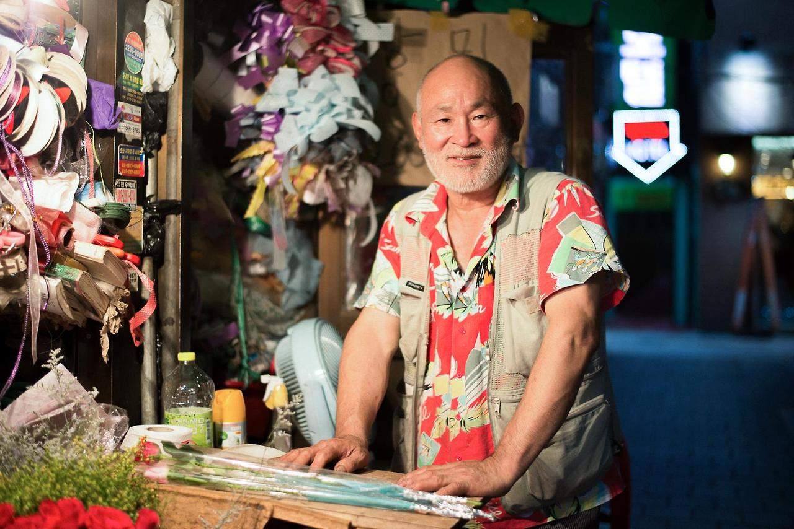
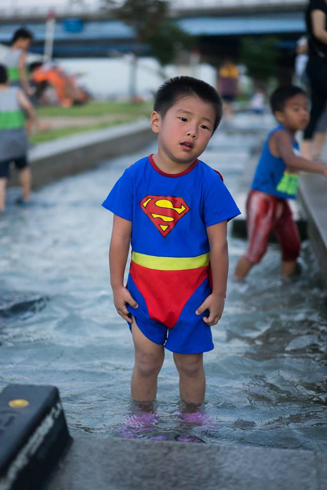

HUMANS OF AJOU UNIV
storys beyond the life
FIND US IN FACEBOOK
카테고리별 보기
August 2014 10post

“When I was 12 years old, a missionary saw me and suggested that I learn how to do flower arrangements. I said, ‘Dudes don’t do things like flower arrangements’. The missionary then said, ‘In life, there’s a difference between choosing not to do something because you don’t know it and being knowledgeable about something and then choosing not to do it.’ My view completely changed after he said this. So I learned how to do flower arrangements as well as some other things, but in the end I ended up choosing to run my own flower shop. 30 years have passed since that moment.”
“제가 12살 때였는데, 선교사가 저보고 꽃을 배우라고 권하더라구요. 그래서 제가 ‘사내새끼가 무슨 꽃을 배워요.’라고 했어요. 그랬더니 선교사가 ‘살면서 모르고 안 하는 것과 알고 안 하는 것은 다르다’라고 말하더라구요. 그 말에 제가 완전히 넘어갔어요. 그래서 그 후 꽃을 배웠는데, 다른 것도 좀 하다가 결국 꽃집 운영을 선택했어요. 그렇게 30년이 흘렀죠.”
“제가 12살 때였는데, 선교사가 저보고 꽃을 배우라고 권하더라구요. 그래서 제가 ‘사내새끼가 무슨 꽃을 배워요.’라고 했어요. 그랬더니 선교사가 ‘살면서 모르고 안 하는 것과 알고 안 하는 것은 다르다’라고 말하더라구요. 그 말에 제가 완전히 넘어갔어요. 그래서 그 후 꽃을 배웠는데, 다른 것도 좀 하다가 결국 꽃집 운영을 선택했어요. 그렇게 30년이 흘렀죠.”

“Right now I work in the IT field, but I’ve thought about being an eastern medicine doctor. It looks good because they can help sick people without doing any surgery, so I’ve really seriously considered becoming one.”
“Then why didn’t you?”
“Because I can’t give up the things I’m currently doing; there’s just too much.”
“지금은 IT분야에서 일하지만, 한의사를 해보고 싶다는 생각을 해봤어요. 수술도 안 하면서 아픈 사람들을 도와주니 좋아보이더라구요. 그래서 진짜 진지하게 한의사를 해볼까 고민도 해봤죠.”
“근데도 왜 한의사가 되지 않으셨어요?”
“제가 지금 가진 많은 것들을 내려놓을 수가 없었거든요.”
“Then why didn’t you?”
“Because I can’t give up the things I’m currently doing; there’s just too much.”
“지금은 IT분야에서 일하지만, 한의사를 해보고 싶다는 생각을 해봤어요. 수술도 안 하면서 아픈 사람들을 도와주니 좋아보이더라구요. 그래서 진짜 진지하게 한의사를 해볼까 고민도 해봤죠.”
“근데도 왜 한의사가 되지 않으셨어요?”
“제가 지금 가진 많은 것들을 내려놓을 수가 없었거든요.”
“My least favorite thing is soju. Once I start to drink it, I always seem to drink too much”
“그리고 제가 제일 싫어하는 건 소주예요. 마시기 시작하면 너무 많이 마셔버려서.”
“그리고 제가 제일 싫어하는 건 소주예요. 마시기 시작하면 너무 많이 마셔버려서.”

Today’s microfashion show
오늘의 패션쇼
오늘의 패션쇼

"Is that your brother?"
"(Girl) No! He’s my cousin."
"You two look close."
"(Boy) We’re really not that close…"
"(Girl) I’m going to get back at him for that!"
"How are you going to do that?"
"With water!"
"친남매이신가요?"
”(여자) 아니요! 사촌이에요.”
"사이가 좋아보여요."
”(남자) 우리 사이 정말 나쁜데..”
”(여자) 오빠한테 복수할 거에요!”
"어떻게 복수하실 건가요?"
"물로요!"
"(Girl) No! He’s my cousin."
"You two look close."
"(Boy) We’re really not that close…"
"(Girl) I’m going to get back at him for that!"
"How are you going to do that?"
"With water!"
"친남매이신가요?"
”(여자) 아니요! 사촌이에요.”
"사이가 좋아보여요."
”(남자) 우리 사이 정말 나쁜데..”
”(여자) 오빠한테 복수할 거에요!”
"어떻게 복수하실 건가요?"
"물로요!"

“I just came from playing board games; there isn’t a day more fun than the one like today.” “Did you play the board games with your friends?”
“No, everyone met each other for the first time through this group.”
“Did you all know each other through a board game cafe?”
“No, we all came together separately through an ad to play board games on the Internet.”
“Do you usually meet strangers like this a lot?”
“No, this is the first time I’ve tried something like this.”
“방금 보드게임을 하고 오는 길인데, 오늘만큼 재밌던 날이 없었던 것 같아요.”
“친구들하고 보드게임을 하셨나봐요?”
“아니요. 전부 처음 보는 사람들이었어요.”
“그 보드게임 카페에서 알게 된 사람들인가요?”
“아니요. 인터넷에서 보드게임하자고 따로 나와 만난 사람들이에요.”
“평소에 낯선 사람들을 자주 만나시나봐요?”
“아니요. 저도 처음 시도해봤어요.”
“I took this semester off from university in order to do what I wanted to do, but I just felt at a loss having free time. To motivate myself, I registered in a morning English class, read books in Jongro or Myeongdong, and just sat by Cheonggyechun, thinking about this and that a lot.”
“What did you realize in doing so?”
“I found that I just kept seeking opportunities. I didn’t challenge myself to do something. I just wanted to have my own specialty. I realized that’s what made me keep feeling at a loss.”
“하고 싶은 걸 마음대로 하려고 휴학을 했지만, 오히려 휴학 이후에 기분이 막막하기만 했어요. 뭐라도 해보려고 아침에 영어학원도 다니고, 종로나 명동에서 책 읽고 돌아다니다가 청계천에 그냥 앉아 이것저것 많은 생각을 했었죠.”
"그러면서 어떤 걸 깨달으셨나요?”
“전 계속 기회를 쫓아다녔던 것 같아요. 근데 특별히 도전하지도 않으면서도, 뭔가는 확실히 해두고 싶었어요. 그래서 계속 막막했던 거였어요.”
“What did you realize in doing so?”
“I found that I just kept seeking opportunities. I didn’t challenge myself to do something. I just wanted to have my own specialty. I realized that’s what made me keep feeling at a loss.”
“하고 싶은 걸 마음대로 하려고 휴학을 했지만, 오히려 휴학 이후에 기분이 막막하기만 했어요. 뭐라도 해보려고 아침에 영어학원도 다니고, 종로나 명동에서 책 읽고 돌아다니다가 청계천에 그냥 앉아 이것저것 많은 생각을 했었죠.”
"그러면서 어떤 걸 깨달으셨나요?”
“전 계속 기회를 쫓아다녔던 것 같아요. 근데 특별히 도전하지도 않으면서도, 뭔가는 확실히 해두고 싶었어요. 그래서 계속 막막했던 거였어요.”

“(Man) Sometimes I talk with my girlfriend about our future marriage. I think we better rent a house on a yearly deposit basis and then buy a house later, because we are struggling to make ends meet. However, she thinks we must buy a house first even if that means getting married later.”
“(Woman) Having this disagreement eventually ends with a serious argument. So, we better stop talking about this at this point.”
”(남자) 가끔 여자친구하고 결혼에 대해서 이야기 하는데, 전 워낙 먹고 살기 힘드니 전세부터 얻고 나중에 집을 사야 한다고 말해요. 근데 여자친구는 결혼을 늦게 하더라도 무조건 집부터 먼저 사야 한다고 생각해요.”
”(여자) 이렇게 서로 티격태격하다가 결국 싸워요. 이쯤에서 멈춰야 돼요.”
“(Woman) Having this disagreement eventually ends with a serious argument. So, we better stop talking about this at this point.”
”(남자) 가끔 여자친구하고 결혼에 대해서 이야기 하는데, 전 워낙 먹고 살기 힘드니 전세부터 얻고 나중에 집을 사야 한다고 말해요. 근데 여자친구는 결혼을 늦게 하더라도 무조건 집부터 먼저 사야 한다고 생각해요.”
”(여자) 이렇게 서로 티격태격하다가 결국 싸워요. 이쯤에서 멈춰야 돼요.”

"Ah, too hot."
"아, 더워요."
"아, 더워요."

“Today is the start of a new week. Is there anything you absolutely need to do this week?”
“Up until now I’ve spent my time in a daze both working a lot and working out. So this week I’m going to play. I’m absolutely, unconditionally going to play.”
“이제 새로운 한 주가 시작되는데, 이 주에 꼭 해야 할 일이 있다면 뭔가요?”
“지금까지 운동도 하고 일도 많이 하면서 너무 정신 없는 시간을 보냈어요. 그래서 이번 주는 놀 거예요. 무조건, 반드시 놀아버릴 거에요.”.
“Up until now I’ve spent my time in a daze both working a lot and working out. So this week I’m going to play. I’m absolutely, unconditionally going to play.”
“이제 새로운 한 주가 시작되는데, 이 주에 꼭 해야 할 일이 있다면 뭔가요?”
“지금까지 운동도 하고 일도 많이 하면서 너무 정신 없는 시간을 보냈어요. 그래서 이번 주는 놀 거예요. 무조건, 반드시 놀아버릴 거에요.”.